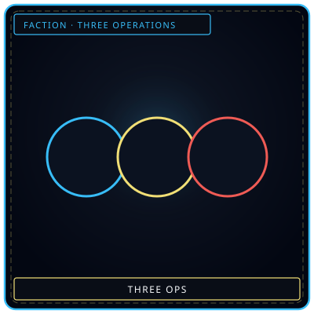
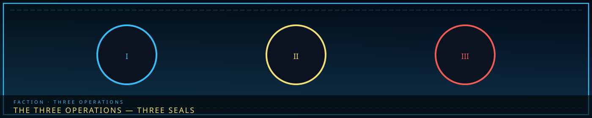
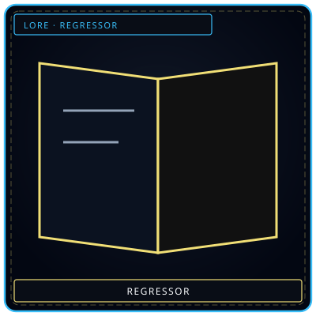

Three sealsI · II · III
/// RAPID JUMP:
STATUS: ARCHIVE VERIFIED |
CLEARANCE: LEVEL-4 OVERSIGHT |
PROTOCOL: REVERIE DIRECTORATE
ARTICLE
DISCUSSION
SOURCE
HISTORY
YEAR 4,238 · DAWN OF HOPE
FACTION · R.D. · SED · UCD
The Three Operations
“Three circles. I, II, III. The city still sits on all three.”


RecordWho signedOverview
Somnarak does not have “founding precursor corporations” in the Wing/Fixer sense. It has three operations in the present age, all after year 4200. Source file title says “Three Corporations”; the civic fact is three missions, one city, shared sorrow.
| Operation | Abbrev. | Mission | Article |
|---|---|---|---|
| Reverie Directorate | R.D. | Contain Sorrow Entities, extract M.A.W., run Facility 01 under the Alpha Tree. Founded 4202. Resonance: Extraction. | Directorate |
| Somnarak Exploration Decreed | SED | Map the unmapped — Corner cities, Desolate edges, forgotten districts. Council decree ~4200. | SED |
| Underworld Cleanup Descend | UCD | Fray raids, Wash District, black-market Han. Combat descent, not a Wing. | UCD |
The old page pasted the entire game-framework chapter (casts, loops, Hand of Hope ending) onto this URL. That dump is gone. Cast stays on character pages. Absolvohan stays on the Cycle. Hand of Hope stays on Hope Transformations. SED Canto text and UCD Arc text stay on those long articles.
What each is
R.D. — containment facility in the Tree’s roots. Daily work is assignment, Work Types, Han-Energy, M.A.W. extraction, Ordeal response, breach return. Story through-line is the Absolvohan, which the Council is not meant to have. Weavers are watching it in Dream anyway.
SED — exploration force into the Undercity, Forgotten Districts, Deep Gardens, Border Tunnels, the Scar, the Desolate. Mapping, entity encounters that are not always combat, environmental Han-hazards, moral choices about what to take home. Seven arcs in source, from Undercity toward the Source. Cast (Yeonhwa, Doha, Harin, Sora, Minjae, Jisoo, the Silent One) lives on character pages, not here.
UCD — combat descent against Frays. Intelligence, infiltration, confrontation, choice. The Wash District is Arc 2. They hit the people who feed on what leaks from R.D. cells and SED maps.
How they connect
The Council funds the Directorate and does not fully understand it. SED walks what the facility will later have to contain. UCD hits the Frays that feed on what leaks from both. Menders contract to RD and Architects at once. Wardens back all three and trust none of the paperwork.
| Event | R.D. | SED | UCD |
|---|---|---|---|
| Entity breach | Containment failure | Exploration disrupted | Crime increases |
| Fray operation | Security threat | Dangerous territory | Direct conflict |
| Han-storm | Facility stress | Environmental hazard | Border threat |
| Sorrow Tide | Energy surge | Entity agitation | Criminal activity |
| Cheongula anniversary | Maw activity | Undercity disturbance | Mourning period |
One story, three tellings: R.D. is containment — how the city manages sorrow. SED is discovery — what lies under the surface. UCD is justice — how the city confronts its crimes. Together they show a city built on sorrow, powered by grief, haunted by the Cheongula. Shared world: Zones A–E, the Desolate, Cheonbulok and Mugeukji as Corner cities, the Gate.
Not Wings
Do not map R.D. to Lobotomy Corporation, SED to Limbus, UCD to a Fixer Office and call them precursor corporations. Analog research belongs in REFERENCE, not in this article’s heading stack. If you need the six Occlusihan factions (Sealers, Severers, Offerers, Exilers, Converters, Endurers), that is the wars, year 202–223, not year 4202.